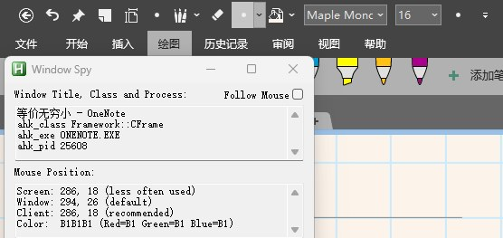
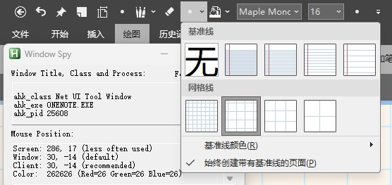

autohotkey 在 Onenote 中模拟鼠标点击发生错位
问题描述
在使用 autohotkey 编写脚本时，在 Onenote 中模拟鼠标点击下拉菜单，然后模拟点击下拉菜单中的选项，会发生错位，第二次鼠标点击明显偏向右下角。
1 | |
问题分析
查看 Autohotkey 的官方文档，找到其 click 内容的文档，可以发现里面提到了关于屏幕坐标的问题
Coords: 如果省略, 则使用光标的当前位置. 否则, 请指定在点击前, 鼠标光标要移动到的 X 和 Y 坐标. 例如, Click, 100 200 在特定位置点击鼠标左键. 坐标是相对于活动窗口, 除非曾使用 CoordMode 更改了这个设置.
于是使用 ahk 自带的脚本 Window Spy ，把鼠标放在下拉菜单的按钮上不移动，查看点击下拉菜单前后有无变化：


发现，窗口果然变了，而且坐标也变了。也就是说，在 Onenote 中，鼠标点击下拉菜单，会导致窗口发生变化，坐标也会发生变化，而 ahk 默认使用的是窗口的坐标，所以会导致点击下拉菜单时，坐标发生偏移。
解决方法
修改 CoordMode，加上 CoordMode, Mouse, Screen 问题解决。
1 | |
autohotkey 在 Onenote 中模拟鼠标点击发生错位
https://taylorandtony.github.io/2025/04/23/autohotkey-在-Onenote-中模拟鼠标点击发生错位/